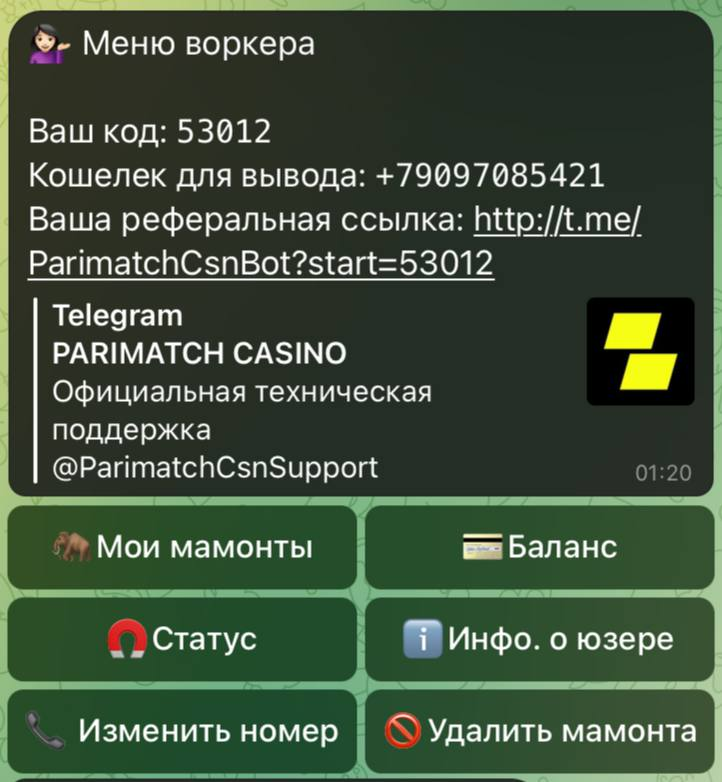
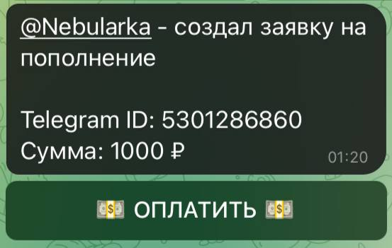
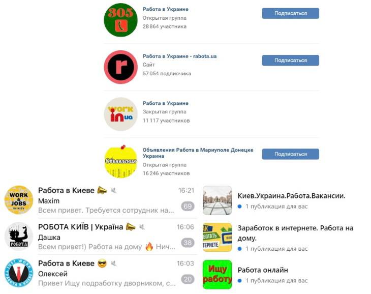

Самый подробный мануал по КАЗИНО скаму
Лучшая команда - та в которой вы перешли на этот мануал
ТС - @Nebularka
ТС - @Nebularka
СОДЕРЖАНИЕ:
- Суть схемы
- Способы поиска
- Cоветы
Начнем с сути казино скама: вам нужно предложить человеку заработок, а именно рассказать, что вы каким-то образом(купили, украли, нашли случайно), достали схему по обману телеграмм бота, но к сожалению, администрация узнала об этом и вас заблокировали, или любую другую причину по которой вы не можете играть со своего аккаунта. Вы предлагаете вашей потенциальной жертве зачислить ему деньги для игры, дать схему, а в дальнейшем поделиться частью выигрыша.
ГДЕ ИСКАТЬ МАМОНТОВ?
На самом деле - везде
На самом деле - везде
- Первый и самый простой способ это создать телеграмм аккаунт обычной девушки, и перейти в бота для знакомств Леонардо Дайвинчик @leomatchbot
пример анкеты для Дайвинчика
После того как ваша анкета собрала лайки, вы начинаете отвечать взаимностью мамонтам, после ждете пока они напишут в лс, с вопросом по типу "Какое у тебя там предложение? Рассказывай!".
Теперь начинается самое интересное, вы скидываете мамонту уже заготовленный текст пример которого будет ниже.
Смотри париматч есть теперь в телеграмме и у них есть игра по типу рулетки. Я купила схему для неё, играла все работало до тех пор, пока не вывела деньги два раза. Они заблокировали мне аккаунт, теперь сама не могу играть. Что ты думаешь на свет того, чтобы я зачислила тебе 250 гривен ты поиграл по моей схеме, поднял бы 2250, а выигрыш мы бы поделили пополам?
Советую попросить какую-нибудь вашу знакомую подготовить голосовые, где она будет рассказывать про казино, а потом кидать их мамонтам, это вызывает доверие. После того как вы рассказали мамонту о предложении у нас есть два варианта исхода событий: первый-мамонт отказывается, после чего мы забиваем на него, и идем дальше, и второй-мамонт соглашается.
План действий после согласия мамонта:
Вы кидаете ему вашу реферальную ссылку, которую можете найти в меню воркера. Просите его создать заявку и отправить вам сообщение с реквизитами, чтобы вы могли перевести деньги.
План действий после согласия мамонта:
Вы кидаете ему вашу реферальную ссылку, которую можете найти в меню воркера. Просите его создать заявку и отправить вам сообщение с реквизитами, чтобы вы могли перевести деньги.

Меню воркера
Меню воркера
После того как мамонт создаст заявку, вам придет уведомление в бота. Оплатите заявку, спустя 2-3 минуты, с момента как мамонт перешлет вам сообщение.

После, говорите мамонту, что вы оплатили и скидываете схему, которую вы можете взять в инфо канале, или создать сами на любую сумму пополнения.
RANDOM NUMBER👇
🎯Ставим 1000₽ на <50
⌚️Ждём примерно 13 секунд
🎯Cтавим 2000₽ на >50
⌚️Ждём примерно 40 секунд
🎯Cтавим 1580₽ на =50
⌚️Ждём примерно 12 секунд
🎯Cтавим 1231₽ на <50
⌚️Ждём примерно 2 секунды
🎯Ставим 2780₽ на >50
Ждём примерно 3 секунды
🎯Ставим 1000₽ на <50
⌚️Ждём примерно 13 секунд
🎯Cтавим 2000₽ на >50
⌚️Ждём примерно 40 секунд
🎯Cтавим 1580₽ на =50
⌚️Ждём примерно 12 секунд
🎯Cтавим 1231₽ на <50
⌚️Ждём примерно 2 секунды
🎯Ставим 2780₽ на >50
Ждём примерно 3 секунды
После того как мамонт наиграет себе баланс, скидываете ему карту из бота и ждете пока он выведет. Если мамонт начинает просить свою долю вперед, вы твердо отказываете, аргументируя это тем, что вы боитесь быть обманутыми, что не раз попадались на такую ловушку и ни при каких обстоятельствах не скинете деньги первой. Также можете сказать, что вам нет смысла врать ему, так как вам выгодно сотрудничать с ним. Если мамонт очень упертый, можете пригрозить ему тем, что выведете через тех.поддержку, предоставив скрин пополнения.
Мамонт вывел деньги и довольный ждет свою долю, с 90% случаев он спросит "ну что? пришли?" , на что вы отвечаете да, и обязательно благодарите его за помощь. Дальше, он начинает выпрашивать свою долю, не стоит быть грубым с мамонтом и посылать его куда подальше, вы можете извиниться за то, что обманули его. Сказать, что вам сильно нужны деньги или просто что у вас синдром жадины. Не нужно говорить мамонту прямо, закинь свои деньги и играй, но вы можете намекнуть ему, что ты тоже можешь воспользоваться данной схемой.
Все, на этом ваша работа окончена, теперь ждите пополнений в боте, от обработанных мамонтов, а дальше с помощью тех.поддержки. Не стоит блокировать мамонта, ведь он вам еще напишет, чтобы узнать про верификацию, и вы вместе с тех поддержкой будите раздевать его до гола
Мамонт вывел деньги и довольный ждет свою долю, с 90% случаев он спросит "ну что? пришли?" , на что вы отвечаете да, и обязательно благодарите его за помощь. Дальше, он начинает выпрашивать свою долю, не стоит быть грубым с мамонтом и посылать его куда подальше, вы можете извиниться за то, что обманули его. Сказать, что вам сильно нужны деньги или просто что у вас синдром жадины. Не нужно говорить мамонту прямо, закинь свои деньги и играй, но вы можете намекнуть ему, что ты тоже можешь воспользоваться данной схемой.
Все, на этом ваша работа окончена, теперь ждите пополнений в боте, от обработанных мамонтов, а дальше с помощью тех.поддержки. Не стоит блокировать мамонта, ведь он вам еще напишет, чтобы узнать про верификацию, и вы вместе с тех поддержкой будите раздевать его до гола
- Второй способ заключается в поиске мамонтов в чатах и группах по подработке во всех соц. сетях. Нужно разместить объявление, на подобии:
Ищу людей для подработки в интернете. Залоги и вложения не требуются. Нужен только аккаунт в телеграмме. Оплачиваю 500 гривен на карту сразу же!
Не нужно предлагать слишком большие суммы, так как, это вызывает подозрения. Дальше, все делаем как обычно: кидаем бота, пополняем, выводим себе и оставляем мамонта ни с чем.
Ниже будут примеры групп и чатов в вк и фейсбуке, также можете искать чаты в телеграмме. Если будите искать мамонтов через вк и фб, советуем использовать впн.

пример чатов и груп
пример чатов и груп
- Третий способ заключается в скаме торчей-эти люди всегда найдут деньги, для того, чтобы увеличить их. Суть такая-же, спамим в чатах с торчами предлагая им заработок, ставьте акценты на том, что заработок не связан с закладками и прочей хуйней, что все чисто и легально. По классике кидаете мамонта и ждете пополнения от него.
- Четвертый способ заключается в поиске трафика с вк, создаете/покупаете странички девочек, сидите в тематических пабликах, чатах разных городов и общаетесь там с людьми, потом рассказываете о схеме, или просто делаете посты по типу:
ищу людей, кто хочет заработать
Полезные советы:
- Никогда не давите на мамонта.
-
Ищите эксклюзивные источники траффика.
-
Предлагайте мамонту микрозайм, если у него вообще нет денег.
-
Не тратьте время на жлобов, которые не заинтересованны в схеме.
-
Пробуйте разные города и разные возраста.
-
Не грубите мамонтам и оставайтесь с ними в дружеских отношениях.
-
Старайтесь все делать натурально, не нужно отдавать мамонту все силы, так как это выдает вас.
-
Будьте веселыми и непринужденными при общении с мамонтами.
-
Заранее создайте себе образ, и ответ на вопрос "расскажи что-то о себе".
-
Создайте заготовки текстов и разместите их в избранном в тг, чтобы было удобнее писать мамонтам.
-
Не уделяйте одному мамонту слишком много времени и не общайтесь с ними неделями, это вам ничего не даст.
-
Не говорите мамонту, что вам заблокировали карту или кошелек, так как это спугнет его.